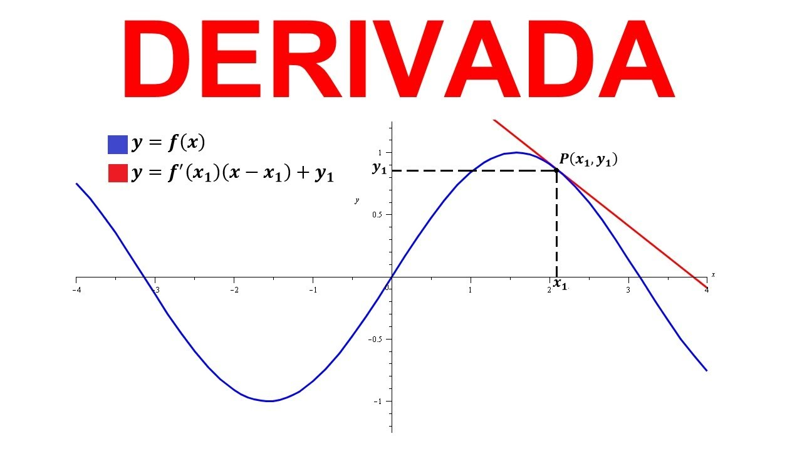
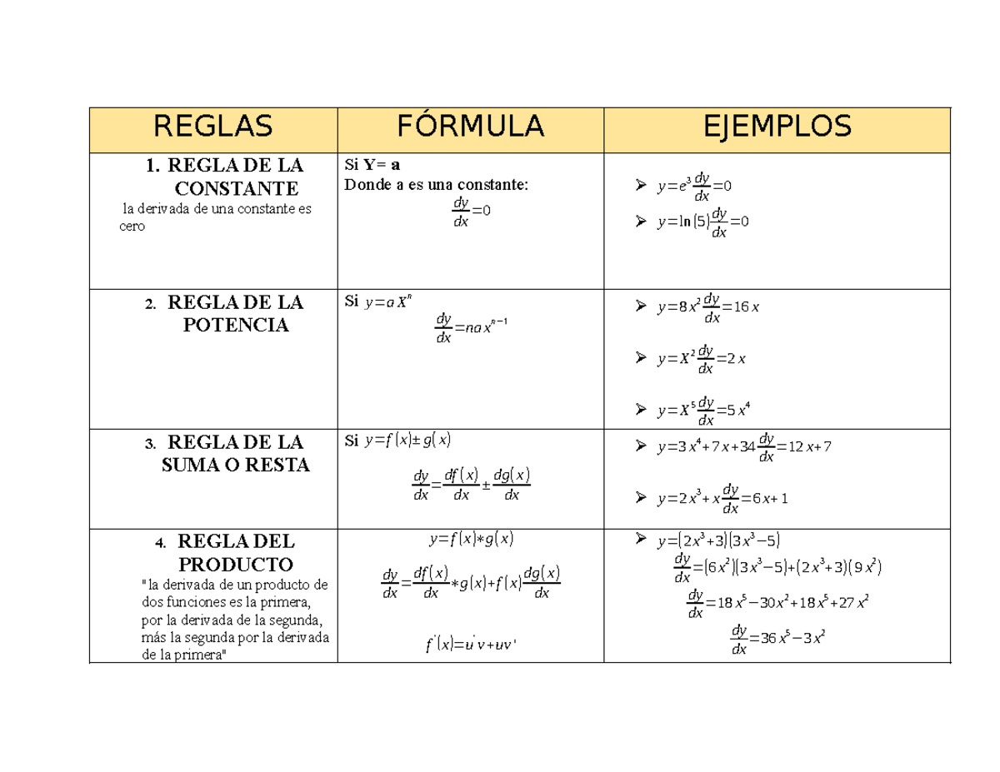
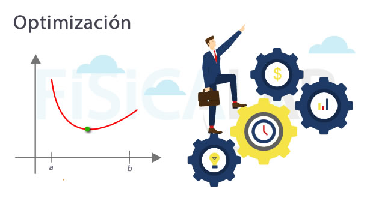
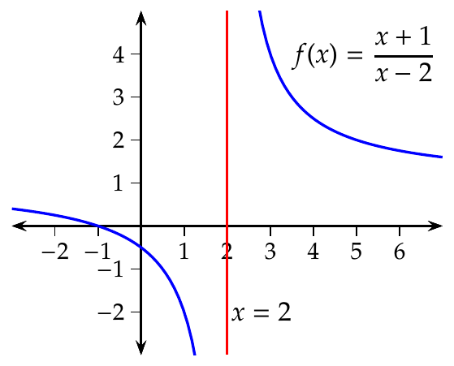

¿Qué es la Derivada?
Es la pendiente de la recta tangente a una función en un punto dado. Representa la velocidad de cambio de una variable respecto a otra.
Ver teoría »Explorando la razón de cambio instantánea y su poder para modelar el movimiento, las finanzas y la ciencia.

Es la pendiente de la recta tangente a una función en un punto dado. Representa la velocidad de cambio de una variable respecto a otra.
Ver teoría »
Desde la regla de la potencia hasta la regla de la cadena. Métodos esenciales para diferenciar funciones algebraicas y trascendentes.
Ver fórmulas »
Uso de derivadas para encontrar máximos y mínimos. Crucial para minimizar costos o maximizar la eficiencia en ingeniería y economía.
Ejemplos »
El fundamento matemático de la derivada. Entender cómo se comporta una función cuando se acerca a un valor específico.
Repasar límites »